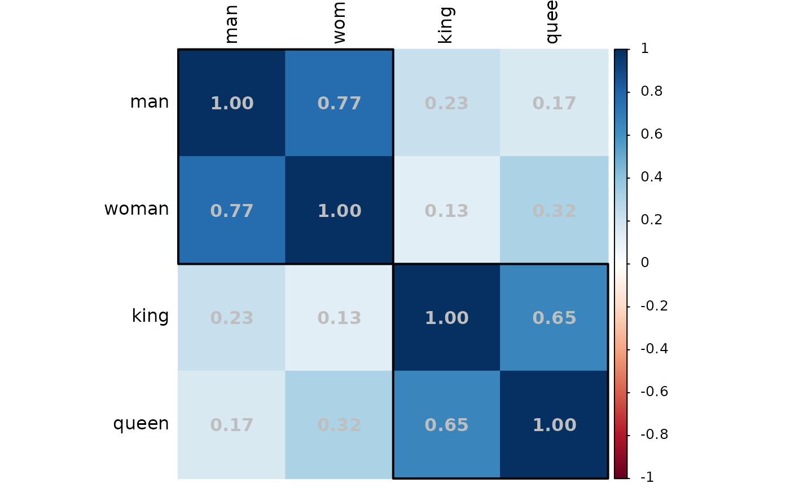

Visualize cosine similarity of word pairs.
Usage
plot_similarity(
data,
words = NULL,
pattern = NULL,
words1 = NULL,
words2 = NULL,
label = "auto",
value.color = NULL,
value.percent = FALSE,
order = c("original", "AOE", "FPC", "hclust", "alphabet"),
hclust.method = c("complete", "ward", "ward.D", "ward.D2", "single", "average",
"mcquitty", "median", "centroid"),
hclust.n = NULL,
hclust.color = "black",
hclust.line = 2,
file = NULL,
width = 8,
height = 6,
dpi = 500,
...
)Arguments
- data
A
wordvec(data.table) orembed(matrix), seedata_wordvec_load.- words
[Option 1] Character string(s).
- pattern
[Option 2] Regular expression (see
str_subset). If neitherwordsnorpatternare specified (i.e., both areNULL), then all words in the data will be extracted.- words1, words2
[Option 3] Two sets of words for only n1 * n2 word pairs. See examples.
- label
Position of text labels. Defaults to
"auto"(add labels if less than 20 words). Can beTRUE(left and top),FALSE(add no labels of words), or a character string (see the usage oftl.posincorrplot.- value.color
Color of values added on the plot. Defaults to
NULL(add no values).- value.percent
Whether to transform values into percentage style for space saving. Defaults to
FALSE.- order
Character, the ordering method of the correlation matrix.
'original'for original order (default).'AOE'for the angular order of the eigenvectors.'FPC'for the first principal component order.'hclust'for the hierarchical clustering order.'alphabet'for alphabetical order.
See function
corrMatOrderfor details.- hclust.method
Character, the agglomeration method to be used when
orderishclust. This should be one of'ward','ward.D','ward.D2','single','complete','average','mcquitty','median'or'centroid'.- hclust.n
Number of rectangles to be drawn on the plot according to the hierarchical clusters, only valid when
order="hclust". Defaults toNULL(add no rectangles).- hclust.color
Color of rectangle border, only valid when
hclust.n>= 1. Defaults to"black".- hclust.line
Line width of rectangle border, only valid when
hclust.n>= 1. Defaults to2.- file
File name to be saved, should be of
pngorpdf.- width, height
Width and height (in inches) for the saved file. Defaults to
8and6.- dpi
Dots per inch. Defaults to
500(i.e., file resolution: 4000 * 3000).- ...
Other parameters passed to
corrplot.
Download
Download pre-trained word vectors data (.RData):
https://psychbruce.github.io/WordVector_RData.pdf
Examples
w1 = cc("king, queen, man, woman")
plot_similarity(demodata, w1)
plot_similarity(demodata, w1,
value.color="grey",
value.percent=TRUE)
plot_similarity(demodata, w1,
value.color="grey",
order="hclust",
hclust.n=2)

plot_similarity(
demodata,
words1=cc("man, woman, king, queen"),
words2=cc("he, she, boy, girl, father, mother"),
value.color="grey20"
)
w2 = cc("China, Chinese,
Japan, Japanese,
Korea, Korean,
man, woman, boy, girl,
good, bad, positive, negative")
plot_similarity(demodata, w2,
order="hclust",
hclust.n=3)
 plot_similarity(demodata, w2,
order="hclust",
hclust.n=7,
file="plot.png")
#> ✔ Saved to /home/runner/work/PsychWordVec/PsychWordVec/docs/reference/plot.png
unlink("plot.png") # delete file for code check
plot_similarity(demodata, w2,
order="hclust",
hclust.n=7,
file="plot.png")
#> ✔ Saved to /home/runner/work/PsychWordVec/PsychWordVec/docs/reference/plot.png
unlink("plot.png") # delete file for code check